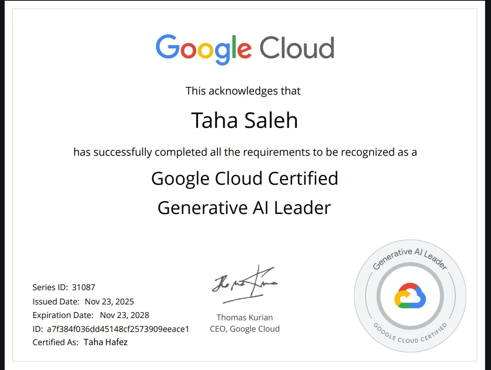
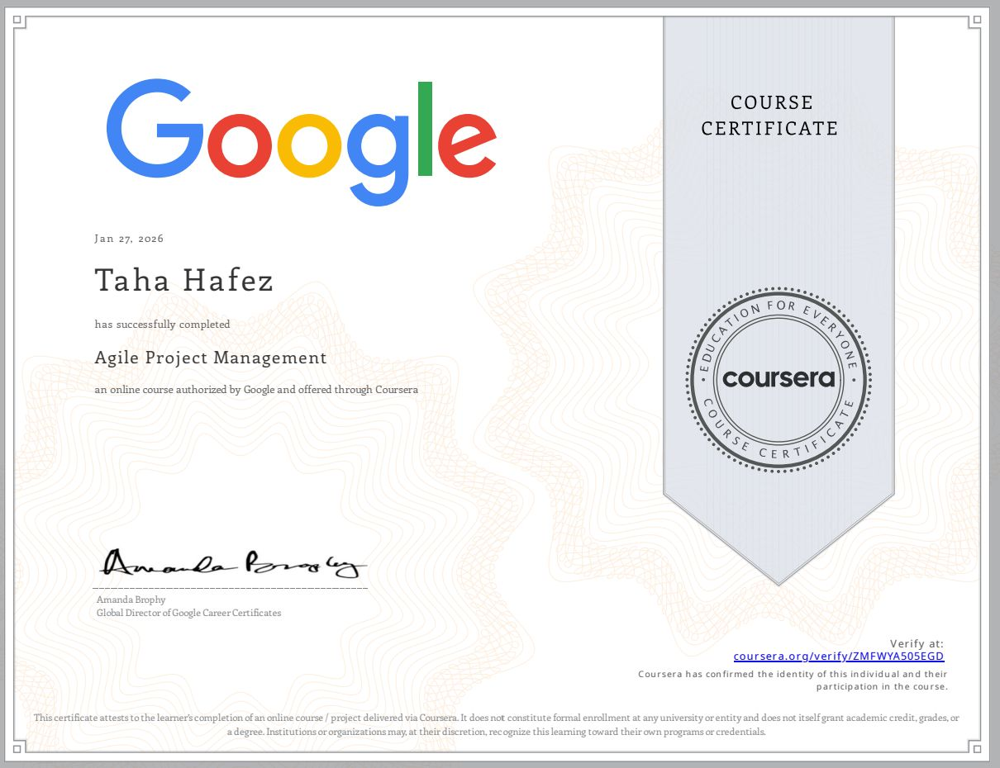

Taha Abu Alata
I design and build data platforms on Google Cloud. I lead the team, and I write the code too.

15 years of building platforms for Saudi organisations
Four projects, then my plan for your Customer 360
Google Cloud platform, data and AI for a giga-project
The problem
Many cloud projects, teams and vendors. Leaders needed one clear answer: what is running, who owns it, what it costs, and is it secure?
My role
Assistant Manager, Cloud Operation. I owned the platform, the automation, the cost data and the internal AI tools. I designed them and built them myself.
What I built
- Terraform modules and CI/CD for GKE, Cloud SQL, network and IAM
- Shared VPC and secure network design
- Cost data model in BigQuery with Looker Studio dashboards
- A list of 81 applications, each with a design and an owner
- AI assistant with Vertex AI, Gemini and RAG on GKE
- Monitoring with Prometheus and Grafana
Results
From raw cloud data to decisions, in 4 steps
How I built one data platform for the whole company, in 7 steps
National platforms: one shared model for many organisations
The problem and my role
I was Solution Architect and Team Lead for government and enterprise clients. This included the DGA National Digital Transformation Platform and four ministries. My teams had 5 to 15 engineers.
What I did, step by step
- Wrote the designs: HLD, LLD, decision records and interface documents
- Designed the APIs (REST, OpenAPI) and event-based integration
- Set performance, availability and recovery targets
- Built security that meets NCA rules for sensitive data
- Ran architecture review boards with all teams
Voice and chat AI agents for many customers, data kept in Saudi Arabia
My role
Principal Cloud and AI Infrastructure Architect. I own the cloud and AI design, the government links, cloud costs and Saudi compliance.
What I built
- Each customer fully separated, no keys in code
- Private VPN and API gateway with mutual TLS
- Moved the platform data into Saudi Arabia
For you
A contact centre agent must find the customer and see their history in seconds. Your Dynamics 365 agents need exactly this.
What managers see: AI and human agents on one screen
Conversations per day
How customers feel
Channel
Quality and safety
Microsoft cloud, identity, reports and CRM
The problem and my role
Cloud Architecture Consultant with Microsoft (2017 to 2018). I helped enterprise customers in different sectors, including financial services, move from their own servers to the cloud. I still work with Microsoft tools today.
What I delivered
- Azure designs, hybrid network and migration plans with costs
- Identity with Azure AD (Entra ID): single sign-on, MFA, Zero Trust
- Office 365, Exchange Online and SharePoint migrations
- Power BI reports with row-level security, embedded in apps
- Dynamics 365 Contact Center design, Power Apps and Power Automate
Recent example: Power Platform portal
Staff fill a Power Apps form. Data goes to a locked SharePoint list through a Power Automate flow. Staff never touch the data directly. Admins get dashboard views.
Dashboards I build that read from many sources
Cost by business unit
Trust checks
How I run Dataflow, Airflow, dbt and BigQuery in production
Dataflow
- Batch and streaming
- Bad rows kept for review
- Monitor and re-process
Airflow
- Safe to run twice
- Automatic retries
- Re-run any past date
dbt
- Load only new data
- Tests on every model
- Docs, lineage, CI on every change
BigQuery
- Partitions and clusters
- Access per dataset and column
- Cost limits per query
# Airflow DAG: nothing is published before checks pass ingest >> dataflow_standardise >> dbt_run_staging dbt_run_staging >> dbt_test_critical # fail = stop + alert dbt_test_critical >> match_identities >> dbt_run_marts dbt_run_marts >> reconcile_vs_source >> [refresh_powerbi, sync_d365]
-- dbt: business table, loads only new rows
{{ config(materialized='incremental', unique_key='customer_sk',
partition_by={'field': 'updated_date', 'data_type': 'date'},
cluster_by=['customer_sk']) }}
select * from {{ ref('int_customer_golden') }}
{% if is_incremental() %}
where updated_date >= (select max(updated_date) from {{ this }})
{% endif %}
Customer 360 on Google Cloud, with all data in Saudi Arabia
Finding the same customer in every system, in 5 steps
PDPL, Saudi data residency and least access, in 6 layers
PDPL
Bring only the fields we need. Keep them only as long as allowed. When a customer asks for their data, the cross-reference table finds every record.
Sensitive data
National ID, mobile, IBAN and medical data are tagged and masked. Medical claims sit in a separate locked project.
I have done this
I mapped 100 controls to PDPL, NCA ECC, SDAIA, ISO 27001 and SOC 2 this year.
13 weeks: one full flow first, then two releases
Match rate
% of customers with a golden record
Duplicates
how many before and after
Matches source
difference vs source system: target 0
Usage
agents using the 360 view every day
Leading 6 to 8 engineers and still writing code
How I run the team
- One owner for each area, 15-minute stand-up every day
- Week 1: naming rules, dbt template, review checklist
- No code goes live without a review and passing tests
- I take the riskiest part myself, usually matching
- One-page weekly update: done, next, risks, decisions
- By week 13 the team can run it without me
"Done" means
Certificates you can check, and awards

